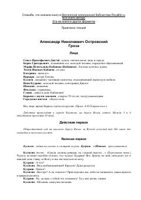

ГXIX asr rus jamiyati illatlari va fojiali muhabbatni ochib beruvchi mumtoz drama.
Aleksandr Ostrovskiyning ushbu mashhur dramasi XIX asr rus provinsiyasidagi patriarxal hayot va axloqiy ziddiyatlarni ochib beradi. Asar markazida bosh qahramon Katerinaning shafqatsiz muhit va zulmga qarshi isyoni tasvirlangan. Pyesa inson erkinligi va jamiyatdagi adolatsizlik mavzularini chuqur yoritadi.